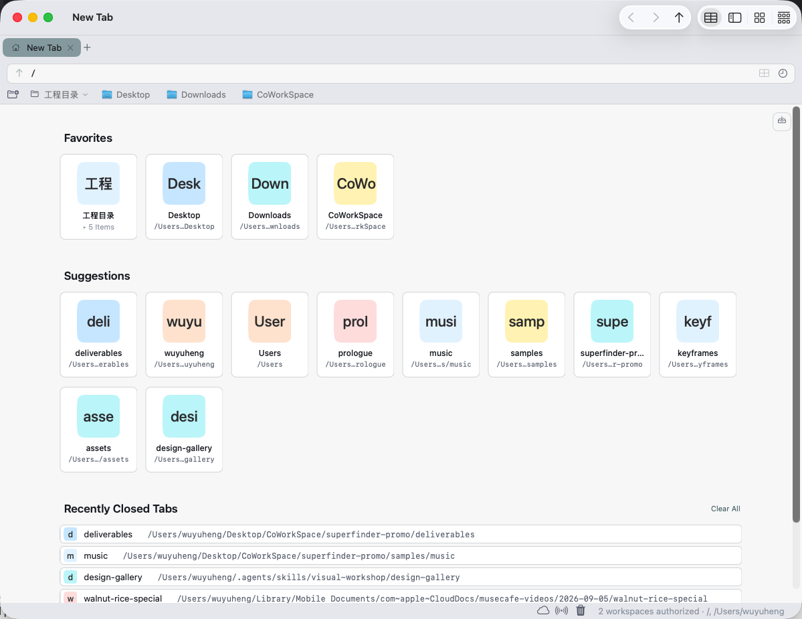

Find, compare, process.
All in one place.
The hard part of file work was never opening a folder. It's the shuttling between places to find, compare, move and change things. SuperFinder puts those moves inside one workspace you can save.
-
01
Jump straight there
Copy a path out of a terminal, a script or an AI chat, paste it into the address bar and hit Return. Type a few letters and Tab completes each level.
↑~/Pictures/Photos/2026-icelandPhotosPublicMovies -
02
Compare
Split the folders you need to compare inside one tab, and work while you look. Name the layout and it reopens exactly as you left it.
Split Right · layout saved -
03
Gather
Drop scattered files into the shelf first, then move them where they belong. Dropping in records a reference only; the originals stay put.
Staging Shelf· 3 itemsReference only · moves on drag-out -
04
Return
Close the app and open it again. Tabs, panes and the shelf come back where they were, without hunting for anything.
Staging Shelf· 3 itemsClose → reopen
One window holds the whole workspace.
Compare folders without a wall of windows
Split four ways inside a tab, drag an edge grip to swap places, then name the layout and reopen it in a new tab.
Collect first, move when you're ready
Drag files in from anywhere; that records a reference. The move itself happens when you drag the stack out.
Close and come back without hunting
Tabs, panes and the shelf return with the folders they were showing — after a crash as well as a clean quit.

Select a file, act on it —
and add the tools you're missing.
Select photos, PDFs, audio or text and the sidebar offers the matching tools: convert, resize, remove background, merge PDFs, transcode video — eleven built in. The scripts you already have can become sidebar tools of your own.
Archive photos by date
A pile of camera originals in, dated folders out. You can watch it run on the right.
Generate files from a CSV
One row in the table becomes one file: a contract, an asset list, a project skeleton.
Tidy a delivery folder
Rename and file everything before delivery. Get it wrong and ⌘Z puts it back.
The boundary, stated plainly
Plugins are code you installed yourself, so their networking is yours. The app itself stays offline.
Plugin example scripts · what you see matches the real write path: moves, copies and renames all revert with ⌘Z
Fast, but never out of bounds.
What got browser-ified is the operating, not the boundaries.
Delete goes to the Trash
Deletion always goes through the system Trash. There is no path around it inside the app, and no preference to change it.
Your files stay on your Mac
The app itself has no networking: no account, no cloud, no telemetry. External plugins are code the user installs, and their networking is the user's business. This site makes zero third-party requests either.
Writes can be undone
Moves, copies, renames and tool output take effect immediately and revert with ⌘Z. Finder-parity basics — batch rename, Quick Look, the ⌘1–4 views — are all here too.
Watch a batch of files get finished.
1 min 12 s, with narration: it starts with a pasted path and ends with a batch of files in place.
SuperFinder.
Browse your files.
Free download · macOS 26 or later · Simplified Chinese / English UI
GitHub repo link ships as a placeholder until the repo is public.